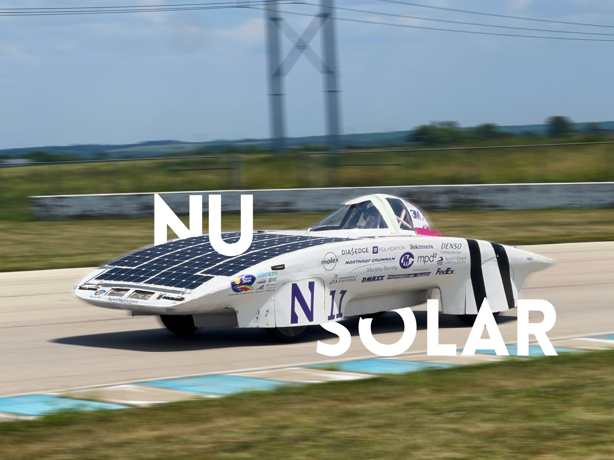
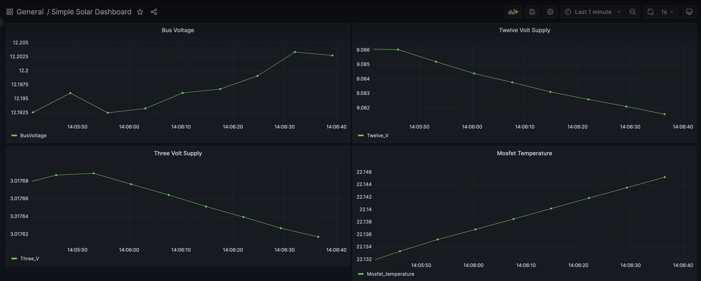
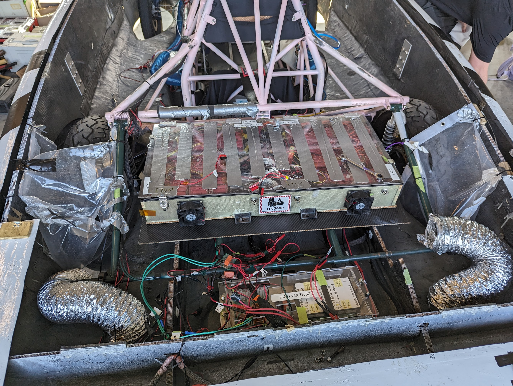
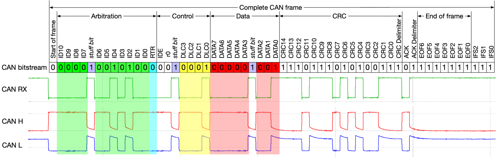
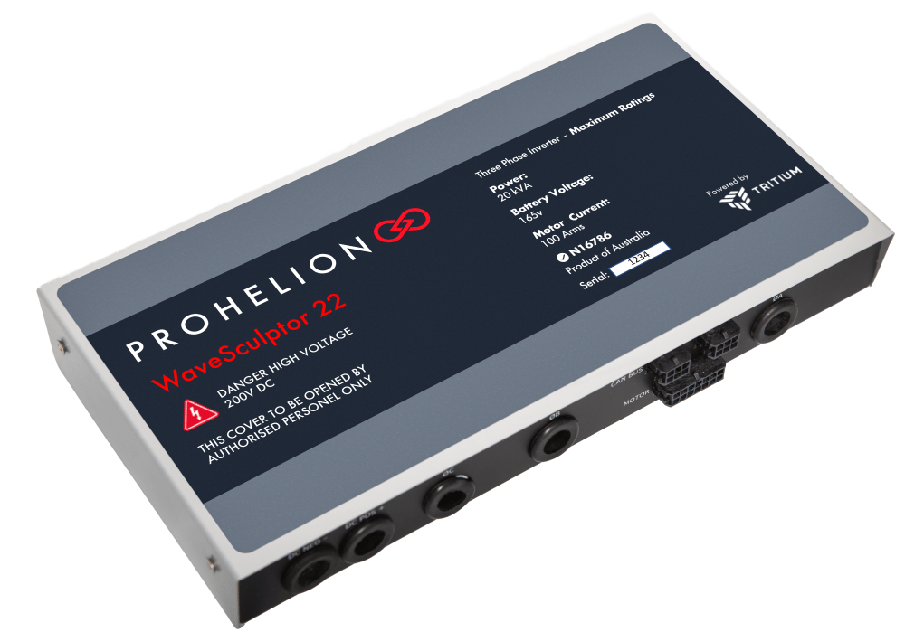
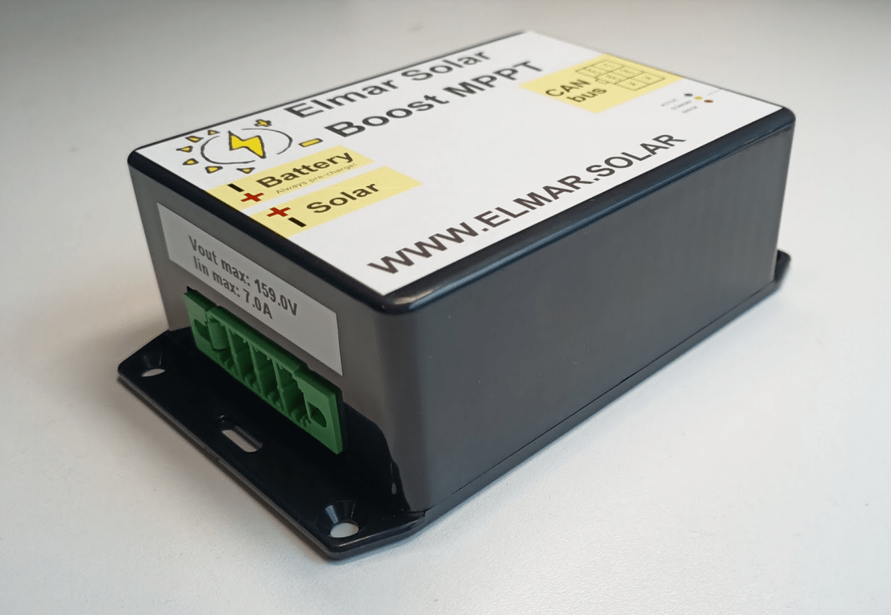

Introduction
Welcome to the Northwestern Solar Car Software team!

This handbook contains training tutorials and documentation for Fall 2023. Training will roughly follow the chapters in this book as they appear, but we may jump between sections as needed. There may be more information here than gets covered explicitly during training sessions; the goal is for this handbook to a be a valuable reference for new members.
Training Road Map
There's a lot to learn about our telemetry system—but don't worry! This handbook assumes no prior programming experience or familiarity with the hardware we use. Generally, many new members do enter with some programming background, so we may move faster through some chapters in practice.
As part of this training, you'll build a simple pipeline for processing telemetry data from our solar car. You'll construct this pipeline from the ground up, understanding each step in the life cycle of a given piece of data.
- First, you'll learn about the CAN standard for device communication on automobiles. At this level, telemetry data is electrical traffic on a network of wires.
- Next, you'll work with different data representations and try your hand at manually parsing collections of bytes known as CAN frames.
- With that done, you'll automate the CAN parsing process with Python. At this point, telemetry data exists as objects in memory.
- Next, you'll learn how to persist data in an SQL database for long term storage.
- Finally, you'll adapt your pipeline to receive data over an XBee radio network.
Along the way, you'll pick up some skills applicable to programming in general, including working on the command line, developing remotely with SSH, using Git to collaborate with others, organizing code with virtual environments, working with package managers, and more.
We'll end the training with an introduction to the current telemetry system and the projects we have planned for this year.
Training is expected to last roughly a month, but may be shorter or longer depending on member feedback. Simultaneous to training sessions following this handbook, more "hands-on" meetings will be taking place to introduce new members to the telemetry system in action.
Getting Help
Software is a small team, and every member should feel welcome and comfortable contributing to the project. If you have any concerns about training or the team in general, please reach out to Matthew Sinclair (Software Lead), Alexander Sorensen (Project Lead), or any other member of the solar car team. New members are the future of this organization, and we all want you to succeed!
Contributing
Want to add something to this handbook? The files for this site are publicly available at github.com/nusolar/training-f23. Submit a pull request with your proposed changes (see the Git and GitHub chapter to learn how).
Our purpose
The Software team's main responsibility is to monitor telemetry data coming from the solar car, including, for example, the state of charge for cells in the battery box, the amount of current being delivered to the MPPTs, the temperature in the motor controllers, and much more. While Mechanical and Electrical are the teams that actively build the car's structure and its circuitry, Software's role is nevertheless fundamental. By tracking telemetry data, we allow the team to:
- Diagnose issues with the electrical components on the car during development.
- Monitor relevant information during a race both from a remote dashboard and an onboard display.
- Predict failure and investigate their causes when they occur.
- Persist telemetry signals in a database for later analysis.
- Make more informed decisions about race strategy and future design cycles.

In the next chapter, you'll start the process of building a simple telemetry processing pipeline from scratch.
Current in a wire
At the most fundamental level, telemetry data exists as electrical signals propagating through a circuit. The exact way that wires are composed with resistors, batteries, motor controllers, MPPTs, etc. in a way that makes our solar car function is complex, but it's largely the domain of the Electrical team.

Much of the details at this level are not essential for the Software team to know, but two facts are particularly relevant:
- There exists a circuit in the solar car on which all the electrical devices are connected and communicate, and traffic on this circuit can be monitored. This is the raison d'être of the Software team; our job is fundamentally based on processing this traffic.
- This circuit follows the Controller Area Network (CAN bus) standard, which is a protocol commonly used in automobiles. The protocol defines certain electrical properties (e.g. the charactereistic impedance of the transmission line) that, when met, allow devices on the network to communicate with minimal errors and noise. Again, this is largely Electrical's domain, but what's important for Software is the format of messages sent on this line. Before we get into that though (see CAN frames), we need to introduce data representations.
A stream of bytes
Thinking of telemetry data as signals in a wire is difficult. If we want to make sense of it, we need a better way to represent it. In this chapter, you'll learn how to format data in binary and hexadecimal, how to represent electrical signals as streams of bytes, and how to interpret individual CAN frames.
Representing data
Binary
You may be familiar with the notion that computers internally handle data as sequences of zeros and ones. Indeed, a "binary" representation of numbers (and more generally, any kind of data) turns out to be a natural choice for computers and electrical circuitry. So how does it work?
Consider the number 2023. When you read this number, you implicitly understand it using the base-10 representation we all learned in grade school. 2023 is made up of 2 thousands, 0 hundreds, 2 tens, and 3 ones. Or:
2023 = 2 × 103 + 0 × 102 + 2 × 101 + 3 × 100.
This common base-10 (or "decimal") representation of numbers likely developed because of the 10 fingers on human hands, but there is really nothing special about 10. For example, it is also true that:1
2023 = 1 × 210 + 1 × 29 + 1 × 28 + 1 × 27 + 1 × 26 + 1 × 25 + 0 × 24 + 0 × 23 + 1 × 22 + 1 × 21 + 1 × 20.
Working in a base-2 (or "binary") representation, where every digit must be either 0 or 1, we can see that 2023 can be written as 11111100111. To avoid confusion between bases, we typically prepend the prefix "0b" to numbers writen in binary. And so, 2023 = 0b11111100111.
Binary gives us a way to "encode" signals sent on wires into something more familiar—numbers. A signal with a voltage profile of high-high-high-low, for example, maps to 0b1110 in binary, or 14 in decimal. Nevertheless, binary is difficult for humans to work with directly. We need a better representation for raw data2.
Terminology
Just as we refer to each character in a decimal number as a digit, we also define the term bit to mean "binary digit". The number 0b10101011 has 8 bits.
Binary numbers can grow quite long, and so bytes (where 1 byte = 8 bits) are more commmonly used as a unit when speaking of binary data.
Hexadecimal
Hexadecimal is a base-16 numbering system. Like binary, it is more useful for representing raw data than decimal. But unlike binary, hexadecimal tends to be much easier to read at a glance. Continuing the previous example, we may write:
2023 = 7 × 162 + 14 × 161 + 7 × 160
Here we run into trouble with the numerals we have at our disposal. The above coefficients would suggest that the base-16 representation of 2023 is something like 7|14|7. Since there are no natural single-character glyphs for numbers above 9, the common practice is to continue with the alphabet (10 → A, 11 → B, 12 → C, etc.). Therefore, the hexadecimal representation of 2023 becomes 0x7E7 (where the prefix "0x" denotes hexadecimal).
| decimal | binary | hexadecimal |
|---|---|---|
| 00 | 0b0000 | 0x0 |
| 01 | 0b0001 | 0x1 |
| 02 | 0b0010 | 0x2 |
| 03 | 0b0011 | 0x3 |
| 04 | 0b0100 | 0x4 |
| 05 | 0b0101 | 0x5 |
| 06 | 0b0110 | 0x6 |
| 07 | 0b0111 | 0x7 |
| 08 | 0b1000 | 0x8 |
| 09 | 0b1001 | 0x9 |
| 10 | 0b1010 | 0xA |
| 11 | 0b1011 | 0xB |
| 12 | 0b1100 | 0xC |
| 13 | 0b1101 | 0xD |
| 14 | 0b1110 | 0xE |
| 15 | 0b1111 | 0xF |
As you'll see in the next chapter, both binary and hexadecimal are useful ways of interpreting messages sent on the CAN bus.
Don't worry about how to come up with this expression for now. It's not terribly difficult, but for this training you will only need to be familiar with the concept and the appropriate Python functions to call.
"Raw data" generally refers to any information that is not meant to be read or written by humans. CAN frames, as we will see later, are one such example. It is also worth noting that raw data is often referred to as binary data to emphasize that it is best thought of as bytes and not as text. You may also hear executable files called binaries for a similar reason.
CAN frames
As mentioned in Chapter 2, the CAN bus is the network on which all the solar car's components communicate with one another. Messages sent on this network are called CAN frames.


As shown above, many of this bits in a frame are responsible for ensuring reliable and orderly transmission on the line (e.g. the 16 bits for the cylic redundancy check). These details are largely unimportant for Software. For our purposes, a CAN frame is composed of two parts: the frame ID and the data.
- Frame ID: The frame ID (also called arbitration ID, message ID, standard identifier, or simply ID) is comprised of 11 bits and is responsible for identifying the sender of the CAN frame and the type of values contained within. For example, on a given CAN network, a frame ID of 0x403 might correspond to velocity measurement message from one motor controller, an ID of 0x413 might correspond to the same message from another motor controller, and an ID of 0x602 might indicate a temperature measurement message from an MPPT.
- Data: Up to 64 bits of a CAN frame contain the actual values of some signal. This is the core of the message.
In the next section you'll learn more about CAN frames as you try your hand at decoding them yourself.
Exercise - Thinking like a computer
It's time to put your newfound CAN bus knowledge to use. In this exercise, you'll manually decode a few CAN frames in preparation for later automating this first stage of the telemetry processing pipeline with Python.
For this exercise, assume we are working on a CAN bus containing the following four devices:
- An Elmar Solar MPPT with base address 0x600.
- An Elmar Solar MPPT with base address 0x610.
- An Elmar Solar MPPT with base address 0x620.
- A Tritium WaveSculptor 22 Motor Controller with base address 0x400.
To decode the following CAN frames observed on this network, you will need to refer to the relevant datasheets for each device, which can be found in the corresponding sections of the Hardware Reference in this handbook (see the sidebar on the left).
A note on types
In the CAN frame specifications for each device, you will find information about the "type" of a variable inside a message. For example, the "Identification Information" frame for a motor controller is specified as containing two variables of type
Uint32. Similarly, you will also find references toUint8,Uint16, etc. These types signify that the bit pattern in the data field should be parsed as an unsigned (i.e. nonnegative) integer, with bit-widths of 32, 8, 16, etc. Unsigned integers are not too hard to parse by hand; it's analagous to the discussion in Section 3.1.You will also see messages where variables are given the type
float(explicitly in the MPPT datasheet; implicitly in the motor controller specs). Afloatis a representation of fractional numbers, following the IEEE 754 Standard. 1.5, -2.0, 10000000.0, and 0.30000000000000004 can all be represented with floating point numbers. Although most signals are naturally of typefloat(temperature, velocity, voltage, etc. are not going to be integers), parsingfloats by hand is entirely different than for integers and is very tedious. You can use an online converter like this one to decodefloats from their hex representation (you can omit the "0x" in the converter). The result will be in the "little-endian" cell.
Frames to decode
| Frame ID | Data |
|---|---|
| 0x625 | 0x0000000500018028 |
Solution
This is a "Status" message sent by the MPPT at base address 0x620. This signal values are:
{
"CAN_RX_error_counter": 0,
"CAN_TX_error_counter": 0,
"CAN_TX_overflow_counter": 0,
"HW_overvoltage": 1,
"HW_overcurrent": 0,
"Twelve_V_undervoltage": 0,
"Batter_full": 0,
"Battery_low": 0,
"Mosfet_overheat": 0,
"Low_array_power": 0,
"Global_MPPT": 0,
"Local_MPPT": 0,
"Duty_cycle_max": 0,
"Duty_cycle_min": 0,
"Mosfet_temperature_error": 0,
"Output_voltage_max": 0,
"Input_current_max": 0,
"Input_current_min": 0,
"Mode": 1,
"Test_counter": 40
}
| Frame ID | Data |
|---|---|
| 0x409 | 0xDA35EF3F68E75440 |
Solution
This is a "3.3V & 1.9V Voltage Rail Measurement" message sent by the motor controller at base address 0x400. This signal values are:
{
"Supply1V9": 1.868830919265747,
"Supply3V3": 3.3266239166259766
}
| Frame ID | Data |
|---|---|
| 0x612 | 0x506B76410276B141 |
Solution
This is a "Temperature" message sent by the MPPT at base address 0x610. This signal values are:{
"Controller_temperature": 22.182621002197266,
"Mosfet_temperature": 15.401199340820312
}
An object in memory
The Python programming language
Setting up
Basics
Exercise - An automated autopsy
A row in a table
SQL
Setting up
Basics
Exercise - Persistence is key
A packet in a network
A stream of bytes, revisited
Exercise - Parsing from a distance
The command line
Git and GitHub
Data flow
Data visualization
Onboard Display
Base station dashboard
Goals
Congratulations on completing Fall training! Now that you are familiar with our telemetry system, let's go over some goals for the upcoming year.
Project listing format
The projects on this page are listed in the following format:
Project name ([⚠️ | ⭐️ | 🌱], 👥 [SIZE], 📅 [DURATION])
A project's level of importance is given by:
- ⚠️ ⇒ Very important, should be prioritized.
- ⭐️ ⇒ Important, ought to happen eventually.
- 🌱 ⇒ Less critical and more free form, will depend on time and member interest.
A rough estimate of the number of people that a project will require is given in the 👥 [SIZE] field. Similarly, a (very) rough estimate of a project's expected duration in given in the 📅 [DURATION] field.
These estimates are very rough and not hard requirements. The true duration or amount of people working on a project may end up differing drastically from what is predicted here.
Polishing the current system
The current telemetry system last year was only partly ready during FGSP 2023; issues with internet connectivity at the track prevented us from pushing last minute fixes to the Raspberry Pi. The following items address aspects of the current system that either need fixing, testing, or just some polish.
Basic testing and data collection (⚠️ , 👥 4-12, 📅 3-4 weeks)
We need to test all the components in the current telemetry system with the car driving. There are likely to be bugs that need fixing or things not quite working as expected, and we need to ensure everything is functional before parts of SC7s are cannibalized for SC8. This also presents an opportunity to collect real data traces from the car for other projects (Data mocking and CAN traffic replays and Exploring time series data with machine learning, for example).
This project will likely coincide with the later parts of training and involve the whole Software team, as it's good hands-on experience.
Postgres backend for base-station database (⚠️ , 👥 1-3, 📅 2 weeks)
We currently use SQLite as the database of choice for telemetry data on the base-station. To make this work with Grafana (which does not support SQLite out of the box), we use the Grafana SQLite Datasource plugin. However, we've discovered that the plugin does not seem to support M2 Macs, and so this project will require refactoring the relevant code to target Postgres (or a similar supported SQL database).
More space-efficient serialization in XBee communication (⚠️ , 👥 1-3, 📅 2-4 weeks)
The Xbee modems we use (see Digi XBee® SX 1-Watt 900 MHz RF) are limited to sending a maximum of 256 bytes per packet. We are able to transfer larger messages by splitting the message into chunks, but this introduces issues if chunks are lost in transmission and is generally inefficient. The current serialization format we use for XBee communication, JSON, is very inefficient for this purpose. This project will explore alternative serialization formats, like MessagePack or something custom-made, to reduce the number of bytes sent over radio and eliminate the need for buffered communication.
Improved Grafana dashboard (⚠️ , 👥 2-5, 📅 4-12 weeks)
Our current Grafana dashboard is incomplete. This project will require adding more panels for relevant signals (which is fairly straightforward) and may explore how best to represent error and limit flags, as well as how to leverage Grafana's more advanced features to, for example, issue an alert if a temperature reading exceeds a safe value.
New projects
Data mocking and CAN traffic replays (⚠️ , 👥 2-4, 📅 3-6 weeks)
We will not always have access to live CAN data from the solar car during our meetings. Initial work was done last year to provide virtual CAN data generation, loosely based on previous CAN traffic. This project will expand upon this work to introduce data mocking based more accurately on observed signals.
It would also be nice to be able to save CAN traffic and replay it at a later time. We have done this sporadically and in a limited capacity in the past, essentially writing CAN traffic to text files. It would be much better to store this data in a well-organized database (perhaps hosted in the cloud; see Cloud hosted databases and dashboard), with an easier way to save traces.
Having CAN data saved and readily accessible is a prerequisite for projects which need to run tests on or analyze such data (like Rigorous, end-to-end testing and Exploring time series data with machine learning).
Rigorous, end-to-end testing (⭐️, 👥 2-5, 📅 6-18 weeks)
No matter how well thought out a complex piece of software is, it is ultimately likely to have bugs or be error-prone if it isn't battle-tested. This is especially true for our telemetry system, since automobiles are generally not friendly environments for computers. At any point during operation, the CAN connection may be jostled loose, an XBee might go out of range, the Raspberry Pi may momentarily lose power or be completely fried by excessive current, etc.
In all these scenarios, we want predictable invariants to be upheld. For example, if the Raspberry Pi loses power, the information on the onboard database should contain all the traffic parsed before the power loss (within a window of, say, a few seconds). Or, if the onboard XBee is jostled lose mid-transmission and sends a corrupted packet, the base-station receiver code should not crash.
The best way to ensure our software is robust (excluding years of field operation), is to write comprehensive tests. A common technique is end-to-end testing, which tests a system holistically, attempting to accurately mimic real operation. This project will involving incrementally creating test suites to validate our software. Those working on this project may explore modeling the car's operation as a state machine, where various effects (e.g. a cable being jostled lose) are represented by state transitions.
Cloud hosted databases and dashboard (⭐️, 👥 2-4, 📅 3-6 weeks)
Currently, all databases and dashboards are run locally—that is, on a member's laptop or the Raspberry Pi. It would be nice to migrate parts of the system, especially the code running on the base-station, to cloud environments, so that base-station operations would never depend on someone's laptop running out of battery, for example. Hosting our data on the cloud would also allow us to share our dashboard on a dedicated website.
XBee cellular communication (⭐️, 👥 3-6, 📅 4-12 weeks)
Currently, all communication between the solar car and the base-station occurs over two radio transmitters. These transmitters work well enough, but are prone to losing contact when separated too far. Last year, we purchased an XBee cellular chip, but we have not started using it yet. This project will involve working with a new piece of hardware to improve our system and will likely involve working with cloud environments.
Onboard GPS module with dashboard integration (🌱, 👥 2-5, 📅 6-12 weeks)
It would be nice to visualize the car's progress along the track on our dashboard. This project will oversee the addition of a new GPS module to the car, which will provide positioning data that must be relayed to the base-station and displayed visually.
Onboard front-facing camera with dashboard integration (🌱, 👥 2-5, 📅 6-12 weeks)
A similar improvement to our dashboard would be a front-facing camera that shows the drivers perspective in the car. F1 broadcasts, for example, tend to show this perspective. While it would be a great addition to the dashboard, members working on this project will need to first determine whether transmitting live video data if feasible with our hardware.
Investigating the energy cost of the Python runtime (🌱, 👥 1-2, 📅 4-12 weeks)
Energy consumption is not a factor often considered when writing software. For our system, however, being a battery hog is unacceptable, as all the power the onboard system uses ultimately comes from the solar cells that power the car. Those interested in other programming languages might investigate the energy cost of running Python on the Raspberry Pi over a more lightweight language like C, Go, or Rust. If it turns out the Python runtime is unacceptably inefficient for our needs (this admittedly seems unlikely), the team could consider migrating a small part of the system to a different language.
Running an onboard REPL to aid debugging (🌱, 👥 1-4, 📅 3-6 weeks)
LISP was the first programming language to feature a REPL (Read, Eval, Print Loop). In the late 90s, a team at NASA deployed LISP code running with a REPL on a Deep Space probe. When code on the probe stopped working, engineers on Earth were able to debug it and send it the necessary commands to fix the issue through this REPL.
Python, like LISP, can run with a REPL, and, like the NASA team, we stand to benefit from accessing such an onboard REPL remotely. It would be a challenge to figure out to set this up over XBee devices, but this project could be a lot of fun!
Exploring time series data with machine learning (🌱, 👥 1-5, 📅 3-18 weeks)
Analyzing CAN traffic with machine learning models could provide interesting opportunities for racing strategy. Through this project, members interested in ML could explore how, if at all, we could use such models to optimize our decisions at a race.
Other projects
Have an idea for a project that's not listed here? That's great! As long as it's even tangentially related to the solar car, you'll be able to work on it. Software is fortunate to be free from many of the tight deadlines and requirements Mechanical and Electrical face (especially true during this year's design cycle), and, as a result, we tend to have more freedom to experiment.
CANUSB COM FD
Raspberry Pi 4
PiCAN 2
Tritium WaveSculptor 22 Motor Controller

The Tritium WaveSculptor 22 is the motor drive responsible for controlling the solar car's motors. The CAN frame specification can be found on pp.28-35 of the user's manual.
Elmar Solar MPPT

The Elmar Solar MPPTs are responsible for managing power drawn from the solar cells on the car. The CAN frame specification can be found on pp.6-7 of the datasheet.